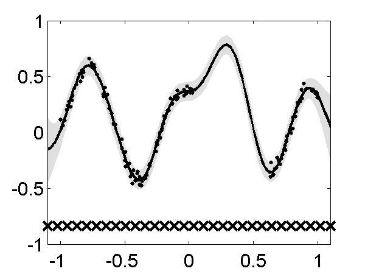

| Neil's homepage | | research group | | MLO Researchers | |
|
|
This page describes examples of how to use the Multi-output Gaussian Process Software (MULTIGP).
The MULTIGP software can be downloaded here.
Current release is 0.11.
As well as downloading the MULTIGP software you need to obtain the toolboxes specified below. These can be downloaded using the same password you get from registering for the MULTIGP software.
| Toolbox | Version |
| NETLAB | 3.3 |
| OPTIMI | 0.132 |
| MLTOOLS | 0.1311 |
| KERN | 0.222 |
| NDLUTIL | 0.161 |
| GP | 0.132 |
| MOCAP | 0.135 |
| DATASETS | 0.136 |
| VOICEBOX | 1.12 |
This is the very first version of the multi-ouput Gaussian Process toolbox. It shows toy examples for a full covariance model and two approximations proposed in the paper Sparse Convolved Gaussian Processes for Multi-ouput regression
This example shows how it is possible to make multiple regression over four outputs using a Gaussian process constructed with the convolution process approach. Note that there are some ranges of missing data for outputs one and four.
>> demGpToy1
In the paper, two approximations that exploit conditional independencies in the model were proposed. Due to their similarities with the PITC and FITC approximations for the one output case, these multi-output approximations are named in a similar way. For PITC run
For FITC run
The result with the approximation can be recreated using
>> demSpmgpGgToy1
>> demSpmgpGgToy2

Up The same two outputs using PITC Down The
same two outputs using FITC. Multi-ouput Gaussian processes for the Swiss Jura Dataset
The experiment for the Swiss Jura Dataset using the full covariance matrix can be recreated using
( you will need to obtain the files prediction.dat and validation.dat from here. Go to the Publications link and then to the Book link)
>> demGgJura
>> demSpmgpGgJura
Mean absolute error and standard deviation for ten repetitions of the experiment for the Jura dataset
In the bottom of each figure, IGP stands for independent GP, P(M) stands for PITC with M inducing values,
FGP stands for full GP and CK stands for ordinary co-kriging. On the left, regression over Cadmium (Cd) and on the
rigth, regression over Copper (Cu)